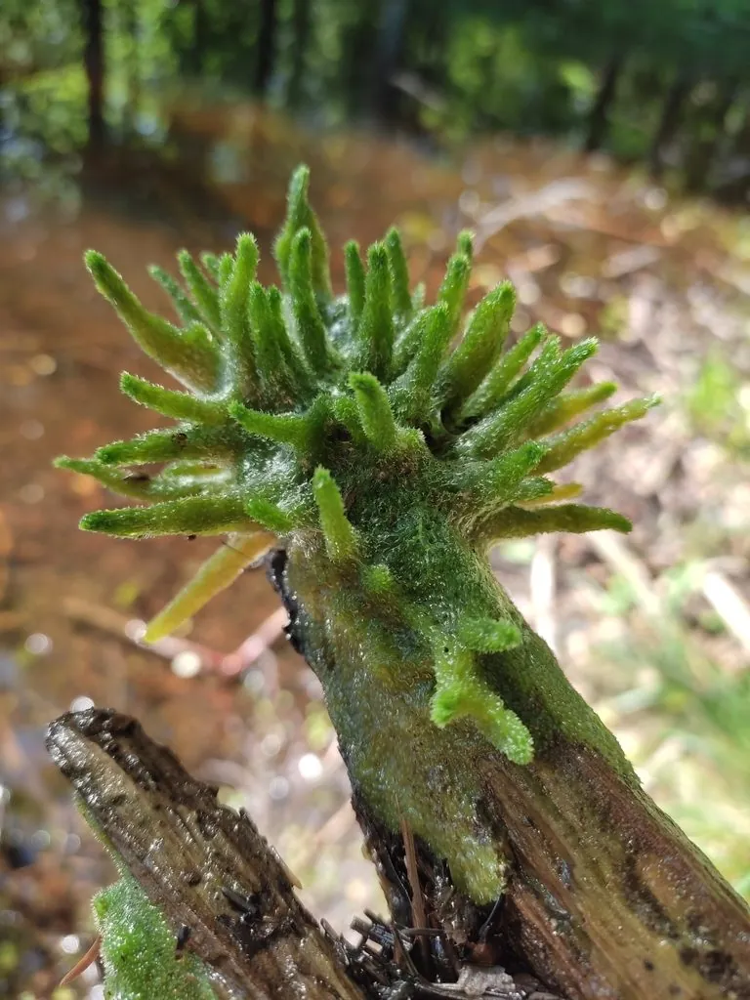

其他无脊椎动物 · 动物界
淡水海绵 Spongilla lacustris

生活在淡水湖泊和溪流中的海绵，体内常有共生绿藻而呈绿色，靠芽球越冬，是水质良好的指示生物。
- 分类
- 门多孔动物门纲寻常海绵纲目单轴海绵目科淡水海绵科属淡水海绵属
- 栖息环境
- 清水湖泊、池塘和缓流溪流，附着在水草、石块上
- 地理分布
- 北半球淡水水体，包括中国北方的湖泊和溪流
- 保护级别
- 暂无评估；可作为水质指示生物
物种志
淡水海绵的群体呈不规则的团块、树枝状或薄层状，附着在水草、石块和木桩上，表面有许多小孔，体色从灰白、黄褐到绿色都有；绿色的个体是因为体内共生了绿藻。它没有真正的组织和器官，靠领细胞鞭毛带动水流。
它生活在清水湖泊、池塘和缓流溪流中，滤食细菌、藻类和有机微粒，是水体中的天然过滤器。环境恶化时，淡水海绵会形成芽球，芽球能耐受低温和干燥，等环境改善后再萌发。它分布于北半球的淡水水体，水质清洁、污染少的地方更容易见到。淡水海绵可作为水质良好的指示生物，但它也会附着在管道和养殖设施上，造成一定影响，清理时要注意保护水体生态。
形态与习性
- 食性滤食细菌、藻类和有机微粒
- 形态群体呈团块、树枝状或薄层状
- 共生常与绿藻共生，因此呈绿色
- 越冬环境恶化时形成耐受低温干燥的芽球
- 生态滤食净化水体，可作水质指示生物
- 分布北半球淡水水体
趣味知识
- 淡水海绵的绿色来自体内共生的绿藻，而不是它自己的颜色。
- 环境变差时，它会形成芽球，等条件改善后再萌发。
- 淡水海绵能滤食水中的细菌和有机颗粒，是天然的过滤器。